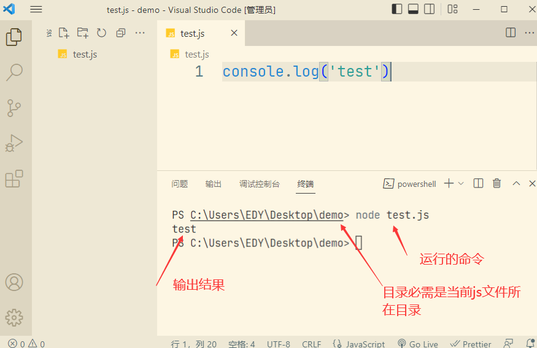
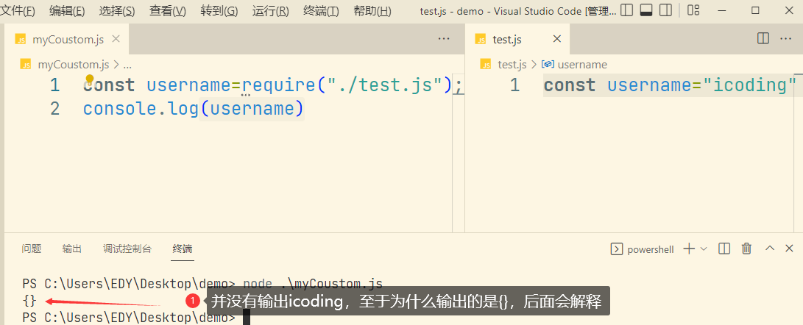
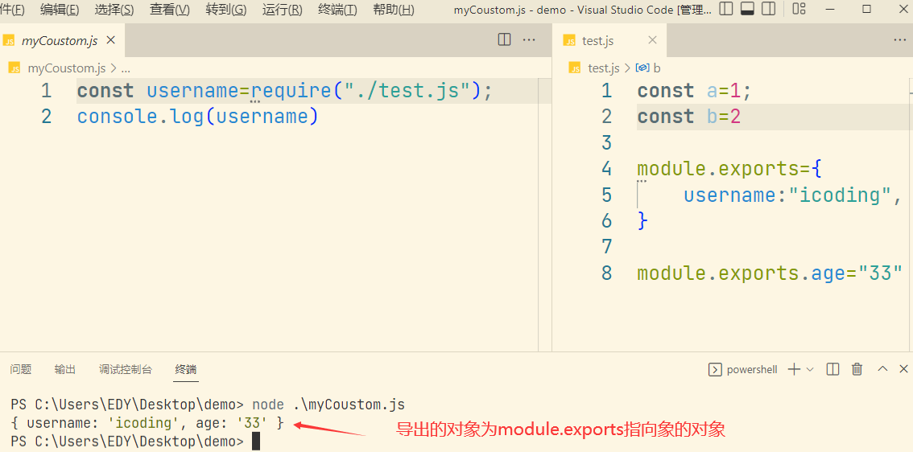
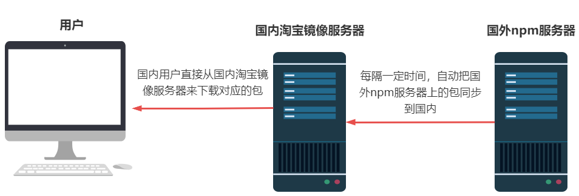
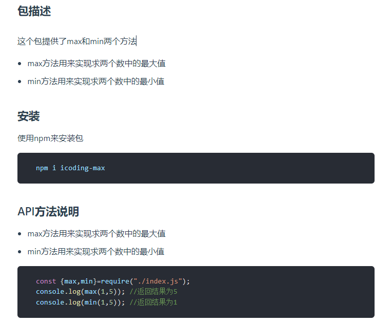
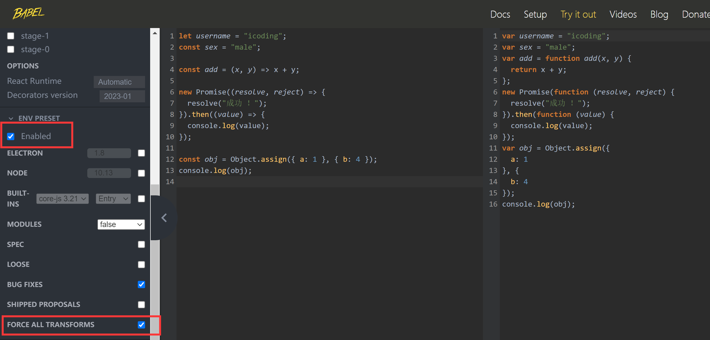
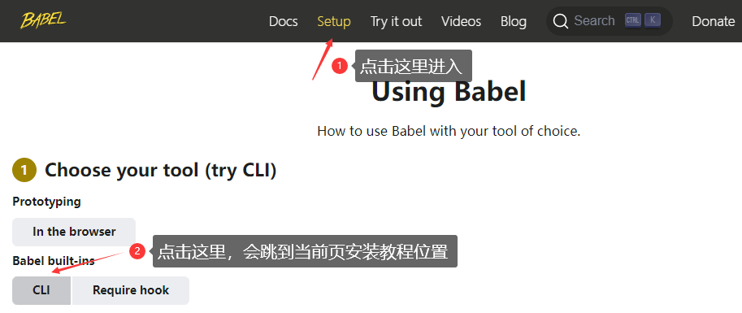

一、常见的 DOS 命令
DOS（Disk Operating System）磁盘操作系统，是早期个人计算机上的一类操作系统，和我们现在常用的Windows系统是一个意思。在
Windows系统还没有出来之前，那时候电脑的主流系统就是DOS，只能通过黑窗口来操作电脑。虽然现在的电脑主流使用的都是
Windows系统，但在Windows系统中一直保留有DOS系统！作为程序员，有些时候我们需要通过DOS命令来执行一些操作，所以我们还是需要对DOS命令做相关了解。
- 如何进入 DOS 系统
- 在 Window 系统中，按键盘上的
win+R 键，可以打开运行窗口，在窗口中输入 cmd，然后回车，就会弹出一个黑窗口(这就是 DOS 系统的主界面)，我们就可以在黑窗口中通过 DOS 命令来执行相关操作。 - 或把鼠标移到电脑右下角**
win这个图标**上，点击后，输入 cmd 然后按回车，就会弹出一个黑窗口… - 可以直接在打开的文件夹路径，直接输入 cmd，然后回车，这里进入到的黑窗口显示的路径为当前文件夹所在的路径。
- 常见的 DOS 命令
| 命令 | 说明 |
|---|---|
| dir | 列出当前目录下的所有文件 |
| cd | cd \ 退回到根目录；cd test 表示进入到test子目录；cd ..返回到上一层目录 |
| c: | 改变当前盘符命令，切换到 c 盘 |
| md | 在当前目录下新建一个文件夹 |
| rd | rd test表示 删除当前目录下的 test 文件夹（前提是当前目录为空，不为空不能删除） |
| tree | 显示当前目录下的目录结构（只显示文件夹名，不包含文件名） |
| cls | 清屏幕命令，清除屏幕上的所有显示，光标置于屏幕左上角 |
- 特殊命令
| 命令 | 说明 |
|---|---|
向上箭头↑和向下箭头↓ |
回看上一次执行的命令，可以一直按到第一次/最后一次输入命令 |
Ctrl + c快捷键 |
中断操作 |
| tab 键 | 自动补全文件名（会根据书写的字母来匹配当前目录的文件），如果有多个相同前缀的文件名，可以按tab切换 |
- 环境变量
当我们想要通过
DOS命令来打开demo文件夹中的hello.txt文件时，我们只需要进入到当前目录，然后在路径后面输入hello.txt就可以打开这个文件了。
C:\Users\EDY\Desktop\demo> hello.txt
- 但如果我们想在任意的目录下，输入
hello.txt时，都能打开demo目录下的hello.txt文件，那要如何做到呢？这就需要配置环境变量了。
环境变量：一般是指在操作系统中用来指定操作系统运行环境的一些参数。你可以简单理解为 window 系统中的变量，用来保存文件夹位置等信息。
配置环境变量
- 第一步：复制
hello.txt文件所在的绝对路径 - 第二步：在电脑桌面我的电脑上右击—属性—高级系统—环境变量—–> 用户变量（每个变量都有特定的用处）我们主要来看
Path变量，双击Path变量，在弹出的新窗口中把hello.txt文件所在的绝对路径保存在在这里。 - 配置好环境变量，需要把黑窗口关闭，重新打开才会生效。之后不管我们在哪个目录下输入
hello.txt，都可以打开hello.txt文件。
总结：
当我们在命令行窗口打开一个文件或调用一个程序时，系统会首先在当前目录下寻找，如果找到就直接打开，如果没找到，则会依次到环境变量的 path 路径中寻找，如果找到就直接打开，如果没找到，最后就会报错。
- 其查找方式和我们 JS 中变量查找的规则类似。
什么情况下需要配环境变量
- 如果我们需要一个命令能在任意位置都可以生效，就可以配置对应的环境变量。
Windows、Linux、Mac 它们都使用什么命令
- DOS 命令是基于
Windows操作系统的命令行工具，它提供了一系列命令，可以用于执行各种操作，例如文件管理、系统配置、网络设置等等。 - 在
Mac操作系统中，命令行工具是基于Unix操作系统的，因此使用的命令是 Unix 命令。Mac 上的命令行工具被称为终端（Terminal），通过它可以使用诸如 ls、cd、cp、rm 等命令。 - 在 Linux 操作系统中，命令行工具也是基于
Unix操作系统的，因此同样使用的是 Unix 命令。Linux 上的命令行工具可以通过终端（Terminal）或控制台（Console）来访问，可以使用诸如 ls、cd、cp、rm 等命令。
- DOS 命令是基于
DOS 命令 与 Mac 和 Linux 的命令有什么区别
- 主要区别如下
| 区别 | DOS | Mac和Linux |
|---|---|---|
| 文件路径 | 使用反斜杠\分隔 |
使用正斜杠/分隔 |
| 命令名称 | dir | ls |
| 命令参数 | 以斜杠/开头 |
以破折号-或双破折号开头 |
| 环境变量 | 使用%变量名%表示 |
使用$变量名表示 |
| 文件权限 | 无此概念 | 使用所有者和权限控制 |
注：
- 这只是一些基本区别的简单概述，实际上每个系统都有大量的命令和特定的功能，因此这些区别只是一些常见的差异
二、Node 相关知识
什么是 Node
- Node.js 是一个基于 Chrome V8 引擎的 JavaScript 运行时环境。
- Node.js 为 JavaScript 提供了在服务端运行的环境，使得 JavaScript 也能开发服务端的程序，前后端统一语言，统一模型的梦想得以实现
Node.js 2009 年诞生，2015 到 2016 左右在中国就火起来了，Node 火了之后带来了连锁反应。2016 年前后，以 webpack 为代表的 Node.js 工作流工具 使前端开发的开发形式产生了翻天覆地的变化。并且，随着 Vue / React 的诞生，使前端开发进入了框架时代。
在今天，可以说前端开发 “上天入地，无所不能”：PC 端 web 开发、移动 web 开发、APP 开发、小程序开发、服务端开发等等都能搞定。
注：
我们日常听到 Node.js 时，要注意区分他到底说的是 平台 还是 Node.js 语言，因此我们讲 Node.js 有两个层面的含义：
- Node.js 是个平台或工具，即在 Node.js 平台上安装模块或包，类似于前端在浏览器上安装插件一样
Node.js 语言 = 后端 JavaScript = ECMAScript + IO + File + ...等服务端的操作
Node 的基本使用
在没有 Node.js 之前，JS 是没有办法单独运行的，只能插入到 html 页面，在浏览器中运行。
现在有了 Node.js，我们可以通过 node 命令在 node 平台上直接运行 JS 文件了。
案例演示
- 在demo文件夹下，新建
test.js文件，内容如下
console.log("test");
在当前目录下打开
VScode命令终端，然后输入以下命令，test.js就被执行，并在终端输出了testnode 后面为需要执行的 JS 文件，前提是路径要写对，否则会报错，找不到对应模块；
只输入文件名时，只能在当前文件所在目录下加载，否则找不到文件就会报错
Node 中模块系统
在
ES6中我们学习过Module模块系统，在Module中使用export和export default来为模块指定输出的接口，利用import来导入（加载）模块。我们知道，模块系统是为了解决模块化过程中产生的一系列的问题。那什么是模块化，模块化有什么好处，又会产生什么问，模块系统是如何解决这些问题的 ？
我们一起来复习下
什么是模块化
- 所谓的模块化就是把一个大的文件，拆分成许多个独立的相互依赖的小文件，这些小的文件我们就称为一个一个的模块。这些小的模块按一定的规则组合起来就能完成某个具体的功能。
模块化的好处
- 提高代码的复用性
- 可以提高代码的可维护性
- 可以实现按需加载
模块化产生的三个问题：
- JS 模块化的问题（如何让一个 JS 文件就是一个模块，有自己独立的作用域）
- 变量命名冲突问题
- 管理模块间的加载顺序问题
模块系统，就是为了解决模块化过程中产生的问题，如上面提到的 3 个问题。那Node 中的模块系统是如何解决模块化产生的问题，就是我们接下来要学习的。
- Node 的模块系统，与 ES6 中的 Module 模块基本思想是一样，但语法和用法不一样。
- Node.js 中文网站（非官方）
- 模块的分类
Node.js 中根据模块的来源，将模块分为 3 大类，分别是：
- 内置模块（Node.js官方提供的模块，如
fs、path、http） - 自定义模块（用户自已在创建的
.js文件） - 第三方模块（由第三方开发出来的模块（排除 node 官方和用户自定义），使用前需要先下载
- 模块的加载
Node.js中使用require()方法来加载一个模块，不过对于不同类别的模块加载时，路径的书写不太一样
- 加载内置模块，直接在require中书写模块的名字就好
const fs = require("fs");
- 加载自定义模块，需要写好对应的路径，JS文件的后缀名也可以省略不写
const myCoustom = require("./myCoustom.js");
//或 const myCoustom=require("./myCoustom");
- 加载第三方模块，需要用npm下载对应模块，然后才能用requier导入，导入时只需要写对应的名字就好
const axios = require("axios");
注：
require()方法在加载模块后，会将模块中的代码执行一遍，多次导入相同的模块，只会执行一次- 关于 module 相关的内容可查阅文档
模块作用域
在自定义模块中的变量和方法等，只能在当前模块内被访问，模块外是没有办法访问的，我们把这种访问的限制，叫做模块的作用域
- 模块的作用域解决了全局变量污染的问题
module 对象-共享模块成员
Node.js 中每个
.js自定义模块中都有一个module对象，它里面存储了当前模块相关的信息，通过module.exports这个属性（这个属性值是一个对象）将模块内的成员共享出去，供外界使用。- 在利用
require()方法导入自定义模块时，得到的就是module.exports所指向的对象。
- 在利用
exports 对象 - 共享模块成员
- 当我们通过
module.exports.username共享成员时，可以简写成exports.username，exports相当于这种情况下的一个快捷键。 exports在模块被执行前被赋予module.exports的值，也就是在模块被执行前，exports和module.exports指向**同一个对象{}**。
但最终模块对外共享的结果，还是以
module.exports指向的对象为准
判断以下模块最终共享的结果：
情况一：
module.exports = {
a: 1,
b: 2,
};
exports.c = 3;
// 最终输出结果： { a: 1, b: 2 }
- 在模块被执行前，
exports和module.exports都指向同一个对象{} - 执行
module.exports={a: 1,b: 2,}，module.exports指向了一个新对象 exports.c = 3;给{}添加了新属性c，因此：exports指向{ c : 3}- 但是！最终模块对外共享的结果，还是以
module.exports指向的对象为准，所以最终输出结果：{a: 1,b: 2,}
情况二：
module.exports = {
a: 1,
b: 2,
};
exports = {
c: 3,
};
// 最终输出结果： { a: 1, b: 2 }
- 在模块被执行前，
exports和module.exports都指向同一个对象{} - 执行
module.exports={a: 1,b: 2,}，module.exports指向了一个新对象 exports也指向了一个新对象{ c : 3}- 但是！最终模块对外共享的结果，还是以
module.exports指向的对象为准，所以最终输出结果：{a: 1,b: 2,}
情况三
exports.c = 3;
module.exports.a = 1;
module.exports.b = 2;
// 最终输出结果： { c: 3, a: 1, b: 2 }
- 在模块被执行前，
exports和module.exports都指向同一个对象{} - 执行
exports.c = 3;，它给{}新增一个属性c，因此exports指向{ c : 3 } - 执行后两行代码，
module.exports给对象{ c : 3 }又新增了新属性a,b，因此module.exports指向{ c:3 , a:1 , b:2} - 因为
exports和module.exports都是通过打点的方式新增属性，所以没有改变指向，一直都指向同一个对象，后面的操作都只是在这个对象上添加新的属性。
情况四
exports = {
c: 3,
};
module.exports = exports;
module.exports.a = 1;
module.exports.b = 2;
// 最终输出结果： { c: 3, a: 1, b: 2 }
- 在模块被执行前，
exports和module.exports都指向同一个对象{}exports指向了新对象{ c : 3 }module.exports = exports;使得module.exports也指向了exports的新对象{ c : 3 }- 后面两行代码都是在给新对象添加属性
a,b- 最终模块对外共享的结果，还是以
module.exports指向的对象为准，所以最终输出结果：{ c: 3, a: 1, b: 2 }
Node.js中模块化规范Node.js中遵循了CommonJS模块化规范（不过与CommonJS还存在细微差别，这里不做讲解），其规范如下：
- 每个模块都有一个 module 变量，这个变量代表当前模块
- module 变量是一个对象，它有一个
exports属性，用来对外共享成员 - 利用
require()方法加载模块，加载的就是module.exports导出的值
fs 文件模块
fs模块，为Node.js中提供的操作文件系统的模块，我们这里简单学习下fs模块的readFile()与readFileSync()方法
fs.readFile(path, options, callback); // 异步读取
fs.readFileSync(path, options); // 同步读取
path文件名options参数，可以用来指字符编码，比如"utf8"callback回调函数，文件读取响应结果后要调的，回调函数有两个参数err和data，err表示失败的对象，data成为读取的结果
- 基本使用
在同一目录
D:\web\gitwork\Engineering\practice\Node>下，新建index.js和hello.txt文件hello.txt文件内容如下
大家好
index.js文件内容如下
const fs = require("fs");
// 同步读取hello.txt文件中内容
const txt = fs.readFileSync("./hello.txt", "utf8");
console.log(txt);
// 异步读取hello.txt文件中内容
const txt2 = fs.readFile("./hello.txt", "utf8", (err, data) => {
if (err) {
throw new Error("文件读取失败");
} else {
console.log(data);
}
});
- 当在目录
...\Node下执行node index.js命令时，在控制台能正常输出结果：”大家好” “大家好” - 当在目录
...\practice下执行node .\Node\path.js命令时，抛出错误。这里为什么呢 ？
因为
node命令在执行时，他会在\practice\hello.txt这个路径中找hello.txt文件，那肯定是找不到了。所以在node中使用./来表示相对路径是非常危险的。
- 不过用
require('./index.js')方式来导入模块时，不需要特别处理，内部处理过了
- 那如何保证在不同的目录下执行
index.js文件，都能正常的找到文件呢？接下来我们就学习node中的path模块和__dirname全局变量，来解决这个问题。
path 路径模块
path模块是Node.js内置模块，该模块提供了一些工具函数，用于处理文件与目录的路径。
我们主要学习
path模块提供的resolve()方法该方法用于把一个路径或路径片段的序列，从右往左处理成一个绝对路径
如果处理完给定的路径片段还未生成一个绝对路径，则当前工作目录会被用上
语法
path.resolve(path1,path2,path3....); // 从右往左将三个路径拼接成一个绝对路径
- 基本使用
// 在使用path模块前，需要先使用require()方法将其导入
const path = require("path");
const url = path.resolve("foo", "bar");
console.log(url);
代码解析
index.js文件所在目录D:\web\gitwork\Engineering\practice\Node>- 如果我在目录
D:\web\gitwork\Engineering\practice\Node>下执行node index.js，在控制台打印的结果是：D:\web\gitwork\Engineering\practice\Node\foo\bar - 如果我在目录
D:\web\gitwork\Engineering\practice>下执行node .\Node\index.js，在控制台打印的结果：D:\web\gitwork\Engineering\practice\foo\bar
经过两次打印的结果我们可以得出，当我们的路径片段未能生成一个绝对路径时，
path.resolve()方法自动帮我们补全的绝对路径是在当前路径前加上工作目录，而非文件所在目录。如果我们希望不管在哪个目录下执行对应的 JS 文件，最后都能得到当前
JS文件所在的绝对路径，那要如何处理呢 ？这就需要用到Node.js中的全局变量__dirnamepath 模块的更多方法可参考文档
- 全局变量
__dirname__dirname为Node.js的一个全局变量，表示当前文件的路径
- 我们通常把这个变量与
path.resolve()方法结合使用，用来指定当前文件所在的绝对路径。
语法：
const path = require("path");
const url = path.resolve(__dirname, "");
console.log(url);
以上代码解析
index.js文件所在目录D:\web\gitwork\Engineering\practice\Node>如果我目录
D:\web\gitwork\Engineering\practice\Node>下执行node index.js，在控制台打印的结果是：D:\web\gitwork\Engineering\practice\Node>如果我在目录
D:\web\gitwork\Engineering\practice>下执行node .\demo\index.js，在控制台打印的结果还是：D:\web\gitwork\Engineering\practice\Node>可见：不管在什么目录下执行
index.js文件，最后url得到的路径都是当前文件所在的绝对路径解决最开始的文件路径错误的问题
const fs = require("fs");
const path = require("path");
// 同步读取hello.txt文件中内容
const txt = fs.readFileSync(path.resolve(__dirname, "./hello.txt"), "utf8");
console.log(txt);
// 异步读取hello.txt文件中内容
const txt2 = fs.readFile(
path.resolve(__dirname, "./hello.txt"),
"utf8",
(err, data) => {
if (err) {
throw new Error("文件读取失败");
} else {
console.log(data);
}
}
);
三、npm
什么是 npm
NPM 的全称是
Node Package Manager，是一个 Node.js 的包管理工具。
那什么是包呢 ？
在我们开发 Node 项目的时候，需要用到很多第三方的模块（和开发者自定义的模块，而是由其它人或团队开发出来，免费供所有人使用的一些模块），这些第三方的模块也称为包。
// axios就是一个第三方模块（包），我们在使用前，需要先通过npm来下载对应的包，否则就会报错。
const axios = require("axios");
为什么需要包呢 ？
通过 JS 的学习，我们知道一门语言本身，他提供的只是一个底层的 API，而我们在使用这些底层的 API 开发项目时，效率很低，所以在实际的业务开发中，经常需要在底层 API 的基础上做一层封装。
比如我们前面讲到的
XMLHttpRequest对象，利用他来发送 Ajax 请求时，每次都要书写大量重复的代码，所以就有人针对这个对象做了相关的封装，封装了 Axios 这个包。那后面我们发送 Ajax 请求，就可以直接使用第三方的模块 Axios 来实现，极大的提高了开发的效率。
需要的包从哪里下载呢 ？
国外有一家叫
npm,Inc.的公司，这家公司旗下有一个非常著名的网站："https://www.npmjs.com/"，是全球最大的包共享平台，你可以在这个平台上搜索你想要的任何包，了解这些包的功能和使用方法。同时
npm,Inc.的公司还提供了一个地址为https://registry.npmjs.org的服务器，来对外共享所有的包，我们可以通过这个服务器来下载自己想要的包
那如何下载需要的包呢
npm,Inc.提供了一个包管理工具，也就是我们前面提到的npm，我们可以通过这个工具，就可以从https://registry.npmjs.org服务器上，把需要包下载到本地来使用。当我们安装
Node时，npm这个工具也被一起安装到了我们的电脑上面。检测是否安装成功，在命令终端执行以下命令
//检测 node 是否安装及版本，正常显示版本号说明已经安装相应的版本
node -v
//检测 npm 是否安装及版本，正常显示版本号说明已经安装相应的版本
npm -v
npm 的作用
我们知道 npm 是
Node.js的包管理工具，那他具体能帮我们做什么呢 ？他可以帮我们做以下事情
- 帮我们从
https://registry.npmjs.org服务器上下载需要的包 - 在我们开发项目时，帮我们管理下载好的包
- 把我们开发的项目（包）上传到服务器
https://registry.npmjs.org上供别人免费使用
那在我们开发一个项目时，npm 是如何帮助我们做好下载和管理我们的包呢 ？我们从新创建一个项目开始说起。
- 至于如何把我们开发的包上传到 npm 服务器上，后面作为单独的模块来讲解
npm 的初体验
在我们创建一个新项目时，我们首先会在当前项目的根目录创建一个
package.json文件，这个文件用来描述项目及项目所依赖的模块信息。即 帮我们管理项目中的依赖包的，让我们远离了依赖地狱。比如：
- 当前项目的名称、版本号、描述等（我们自己开发的项目，也是一个包，也可以供别人使用，npm 也需要帮我们管理）
- 项目中都用到了哪些包
- 哪些包是在开发期间会用到的
- 哪些包是在开发和生产（项目上线）都会用到
当然，我们不需要手动来创建package.json文件
- 创建
package.json文件我们只需要在当前项目录下，在
VsCode终端执行npm init命令，然后按命令提示，输入对应的项目名称，之后就一直回车就行，直到命令结束，最后就会自动在当前目录创建好package.json文件。
// 执行以下命令，会在当前项目中，创建一个package.json文件
npm init
// 如果想调过中间所有步骤，全部采用默认值，可以使用
npm init -y
- 以下是生成好的
package.json文件，关于这个文件配置项的说明，后面会讲到
{
"name": "qinxin",
"version": "1.0.0",
"description": "",
"main": "index.js",
"scripts": {
"test": "echo \"Error: no test specified\" && exit 1"
},
"author": "",
"license": "ISC"
}
- npm 下载（安装）包
- 在当前目录的命令终端，执行以下命令可以下载需要的包
// 下载对应的包
npm install 包名
// 下载对应的包，i 是上面 install 的简写
npm i 包名
//如果需要下载指定版本的包，则在包后面带上对应的版本号 版本号格式 @x.x.x
npm i 包名@5.1.2
// 如果需要一次性安装多个包，每个包之间用空格隔开
npm i 包名 包名 包名
- 在当前目录下，安装 axios 包
//下载最新版本的axios
npm install axios
// 下载最新版本的axios，上面方法的简写
npm i axios
// 安装指定版本，版本号为 1.3.3
npm i axios@1.3.3
// 一次安装2个包
npm i jquery axios
// 查看axios共有多少个版本
npm view axios versions
注：
- 当我们下载好对应包后，在当前目录下多出了
node_modules文件夹和package-lock.json文件，同时package.json中多出了一个dependencies属性
node_modules 文件夹
- 所有安装到项目中的包，都放在了这个文件夹中。
require()导入第三方包时，就是从这个目录中查找并加载包。
package-lock.json 文件
- 它记录了
node_modules目录下所有模块（包）的名称、版本号、下载地址、及这个模块又依赖了哪些依赖 package-lock.json的作用：锁定安装时的包的版本号及包的依赖的版本号，以保证其他所有人在使用npm install时下载的依赖包都是一致的。锁定版本号，防止自动升级新版本。
package.json 与 package-lock.json的区别
- npm5 以前，没有
package-lock.json这个文件。package.json只能锁定模块的大版本号（版本号的第一位），不能锁定后面的小版本，所以你每次重新npm install时候拉取的都是该大版本下面最新的版本。 - 一般我们为了项目的稳定性考虑我们不能随意升级依赖包，如果换包导致兼容性
bug出现很难排查，这样很容易出现问题 npm5以后，新增了package-lock.json这个文件，它用来锁定所有模块的版本号，包括主模块和所有依赖子模块。- 当你执行
npm install的时候，node从package.json文件读取模块名称，从package-lock.json文件中获取版本号，然后进行下载或者更新。
- 指定包的依赖
在开发项目时，我们会用到很多包，有些包只需要在开发环境中使用，项目上线后就不再需要了，而有些包在开发和项目上线后都需要用到。
- 所以我们把包分为：开发依赖包和生产（核心）依赖包
| 包分类 | 描述 |
|---|---|
| 开发依赖包 | 只在项目开发期间会用到，比如后面学到的 webpack 打包工具，他只是用来对项目做打包构建的，项目打包构建好后，上线部署肯定就用不到webpack包了。所以webpack为开发依赖包 |
| 生产（核心）依赖包 | 在项目开发和上线都需要用到，比如前面说的axios包，他在项目中是用来发送请求的，不管是上线还是开发阶段都需要用到。如果上线把这个包去掉了，项目就会出错。所以axios就是生产（核心）依赖包。 |
在
package.json中，有如下两个属性，用来记录包的类型
| 属性 | 作用 |
|---|---|
| dependencies | 记录生产（核心）依赖包，项目在打包上线时，会把对应的包打包进去 |
| devDependencies | 记录开发依赖包，项目打包上线时，不会把对应的包打包进去 |
注：
在安装包时，如果不指定包的依赖环境，默认指定为生产依赖包。如果想要在安装包时，指定包的依赖环境，可用以下命令
将包指定为开发依赖
npm i 包名 --save-dev # 将安装的包指定为开发依赖包
npm i 包名 -D # -D相当于是--save-dev的缩写，将安装的包指定为开发依赖包
// 以下写法也可以
npm i --save-dev 包名
npm i -D 包名
// 安装webpack webpack-cli 为开发依赖
npm i webpack webpack-cli -D
- 安装成功后，就会在
package.json文件的devDependencies属性中添加如下两个属性
"devDependencies": {
"webpack": "^5.76.1",
"webpack-cli": "^5.0.1"
},
- 将包指定为生产依赖
npm i 包 # 不指定依赖环境，默认安装到生产环境
npm i 包 --save #将安装的包指定为生产依赖
// 以下写法也可以
npm i --save 包
>
// 安装axios包到生产环境
npm i axios;
// 或
npm i axios --save
- 安装成功后，就会在package.json文件的dependencies属性中添加如下属性
"dependencies": {
"axios": "^1.3.4"
}
温馨提示
- 我们在安装对应的包时，可以参考包的说明，包的说明中会给出包安装的命令，通过命令可以知道当前包是需要安装在生产还是开发环境。
- npm 删除(卸载)包
在当前目录命令终端，执行以下命令可以删除下载好的包
npm uninstall 包 # 删除本地包，不考虑版本，不考虑依赖环境
// 删除axios包
npm uninstall axios
注：
- 包删除成功后，对应
package.json和package-lock.json文件中包相关的信息全部都会被移除。
- package.json 文件配置说明
以下是关于
package.json文件的相关配置项说明
{
// 项目名称，不能以"."和"_"开头，不能包含大写字母，因为当软件包在npm上发布时，会基于此属性获取自己的URL，同时名称作为参数被传入require("")，用来导入模块，所以尽量简短、语义化
"name": "hermia",
// 该项目的版本号，它是一个字符串。每次项目改动后，即将发布时，都要同步的去更改项目的版本号。版本号的格式为： 主版本号.次版本号.修订号 => 5.1.0
// 通常情况下，修改主版号是做了大的功能的改动
// 修改次版本号是新增了新功能，
// 修改修订号就是修复了一些bug
// 查看包的版本信息 npm view 包名 version =>查看最新版本
// npm view 包名 versions =>查看所有版本
"version": "1.0.0",
// 项目的描述，可以让其它开发者在npm的搜索中发现我们的项目包，搜索对应包时对应的描述
"description": "",
// 用来指定加载的入口文件，在浏览器和Node环境中都可以使用。如果我们将项目发布为npm包，那么当使用require导入npm包时，返回的就是main字段列出的文件的module.exports属性。如果不指定该字段，默认是项目根目录下的index.js，如果没找到，就会报错。
"main": "index.js",
// 脚本配置 scripts是package.json中内置的脚本入口，是key-value键值对配置。
// 可以通过npm run 来执行的命令。 npm run dev
// 还可以通过与 pre 和 post 完成前置和后续操作
"scripts": {
"test": "echo \"Error: no test specified\" && exit 1"
},
// 项目作者 它的值是你在https://npmjs.org网站的有效账户名
"author": "",
// 指定软件的开源协议，开源协议表述了其他人获得代码后拥有的权利，可以对代码进行何种操作，何种操作又是被禁止的
"license": "ISC",
// devDependencies 开发阶段需要的依赖包
"devDependencies": {
"webpack": "^5.76.1",
"webpack-cli": "^5.0.1"
},
// dependencies 表示项目的生产和开发环境中都需要依赖的包
"dependencies": {
"axios": "^1.3.4"
}
}
注意：”scripts”脚本
- 脚本配置
scripts是package.json中内置的脚本入口，是key-value键值对配置。 - 可以通过
npm run 键名来执行键值里面的命令。如：npm run dev
package.json文件作用通过前面的学习，我们知道
package.json文件用来描述项目及项目所依赖的模块信息。即 帮我们管理项目中的依赖包的，让我们远离了依赖地狱。如果我们想把自己开发的项目分享给别人，不需要把
node_modules这个文件分享过去，这个文件夹中的文件体积庞大，下载和上传都是极为不方便，而且会特别慢。
- 我们只需要把其它的文件发送给对方，对方拿到文件后，只需要在当前项目的根目录下，执行以下命令
npm i
//自动根据package.json中的信息来下载项目所需要的所有依赖包。
- 就会自动根据
package.json和package-lock.json文件中的信息来下载项目所需要的所有依赖包
解决 npm 下包速度慢问题
当我们使用 npm 下载包的时候，默认是从国外的
https://registry.npmjs.org服务器进行下载，所以下载的速度会很慢。
- 那国内是如何解决下载速度慢的问题，这就要提到淘宝的
npm镜像服务器 和nrm。
- 淘宝的 NPM 镜像服务器
镜像（Mirroring）：是一种文件存储形式，一个磁盘上的数据在另一个磁盘上存在一个完全相同的副本即为镜像。
淘宝在国内搭建了一个
https://registry.npmmirror.com/服务器（也就是 NPM 镜像服务器），专门用来把国外https://registry.npmjs.org服务器上的包同步到国内的服务器。
- 这样国内需要对应的包，就可以直接在国内的服务器上来下载了，极大的提高了下包的速度。
提示：
淘宝官方通知：
https://npm.taobao.org和https://registry.npm.taobao.org将在 2022 年 6 月 30 日正式下线和停止 DNS 解析。域名切换规则：
https://npm.taobao.org=>https://npmmirror.comhttps://registry.npm.taobao.org=>https://registry.npmmirror.com
- 查看当前正在使用的 npm 镜像源
npm config get registry
- 切换 npm 镜像源
npm config set registry https://registry.npmmirror.com
- 镜像源地址只需设置一次即可
npm的镜像源切换为https://registry.npmmirror.com后，我们使用npm命令来下载包，就相当于是直接国内的这个服务器上来下载包，速度会很快速。
- nrm 源管理器
npm 有很多镜像源服务器,而
nrm（npm registry manager）是 npm 的镜像源管理工具，允许你快速地在 npm 源间切换。
- 全局安装 nrm
//通过npm，将nrm安装为全局可用的工具，即不管在任何目录下，都可以使用nrm命令
npm i nrm -g
- 安装好 nrm 后，查看所有可用的镜像源
//查看所有可用的镜像源
nrm ls
- 将当前源切换为对应的 taobao 源
nrm use taobao
- 我们可以通过以下命令来查看我们的源是否切换成功
npm config get registry
四、开发自己 npm 包
接下来我们尝试开发一个简单的包，然后上传到 npm 平台上去。让大家了解 npm 在整个过程中的应用。
- 一个完整的包，至少有以下三个文件
| 文件名 | 作用 |
|---|---|
| package.json | 用来描述项目和管理项目所依赖的模块信息 |
| index.js | 用来指定加载的入口文件，如果我们将项目发布为 npm 包，那么当使用 require 导入 npm 包时，返回的就是package.json文件中 main 字段列出的文件的module.exports属性。如果不指定该字段，默认是项目根目录下的index.js，如果没找到，就会报错。 |
| README.md | 包的说明文档，描述包的作用和包的使用教程 |
接下来我们就按以下步骤来开发自己的
- 创建项目文件夹，用来存放项目用到的所有文件
- 初始化项目需要的 package.json 文件
- 创建index.js文件，包的入口文件
- 撰写 README.md 说明文档
创建项目文件夹
在创建项目文件夹前，先要想好自己包（项目）的名字，同时在 npm 官网
https://www.npmjs.com/上查询有没有对应的包名。- 如果没有这个包名就能用，如果有，那就要更换，因为不能出现同名的包。
在本地新建一个hermia文件夹（项目名），所以项目需要用到的文件都保存在当前目录中
- 如果没有这个包名就能用，如果有，那就要更换，因为不能出现同名的包。
初始化
package.json文件当项目
hermia文件夹下，利用npm init -y命令初始化package.json文件- 得到如下
package.json文件
- 得到如下
{
"name": "icoding-max",
"version": "1.0.0",
"description": "",
"main": "index.js",
"scripts": {
"test": "echo \"Error: no test specified\" && exit 1"
},
"keywords": [],
"author": "",
"license": "ISC"
}
- 完善
package.json文件中的描述、关键字、作者
- 创建 index.js 文件
在当前目录下创建
index.js文件，作为项目的加载入口文件。在文件中编写max和min两个函数，这两个函数用来实现两个数中的最大值和最小值，并将其作为模块接口导出。- 具体代码如下
// 求两个值中的最大值
function max(a, b) {
return a > b ? a : b;
}
// 求两个值中的最小值
function min(a, b) {
return a > b ? b : a;
}
// 将两个方法作为模块对外输出的接口
module.exports = {
max,
min,
};
撰写 README.md 说明文档
README.md包的使用说明文档，以markdown的格式来书写，方便阅读。READEM.md文件中具体写什么内容，没有强制要求，开发者尽可能清晰的把包的功能，安装、用法，注意事项等描述清楚即可。- 以下是我为本包做的一个简单的说明文档
上传包到 npm 平台
要将自己开发的包上传到 npm 平台，经历以下几步：
- 在 npm 平台，注册 npm 账号
- 访问
https://www.npmjs.com/网站，点击右上角的sign up按扭，进入用户注册界面。 - 填写账号相关的信息
- 访问
- 登录 npm 账号
- npm 账号注册完成后，在命令终端切换到当前项目的根目录，并执行
npm login命令，开始登录，根据提示，分别输入 用户名、密码，一次性密码等操作，最后就会登录成功。温馨提示
- npm 账号注册完成后，在命令终端切换到当前项目的根目录，并执行
- 在运行
npm login命令前，必须要先把npm的镜像切换为npm官方的服务器https://registry.npmjs.org，否则登录不进去。 - 如果不清楚是否成功，可以执行
npm profile get命令，查看账户简介
// icoding-max为项目文件夹
PS C:\Users\EDY\Desktop\demo\icoding-max> npm login
PS C:\Users\EDY\Desktop\demo\icoding-max> npm profile get
- 发布包到 npm 上
- 在当前项目的根目录下，执行
npm publish命令，即可将包发布到 npm 上。
- 在当前项目的根目录下，执行
// icoding-max为项目文件夹
C:\Users\EDY\Desktop\demo\icoding-max> npm publish
// 如果希望发布的包对外不公开，则可以使用下面命令
npm publish --access public
发布成功后
- 在 npm 官网
https://www.npmjs.com/右上角，点击我的头像，选择Packages菜单进入，就可以看到自己发布的包
- 删除发布的包
在终端登录 npm 账号后，可以运行以下命令，将对应的包从 npm 平台上删除
npm unpublish 包名 --force # 从npm平台上删除自己发布的对应包
// 删除刚才发布的包，-f 是 --force 的简写
npm unpublish icoding-max -f
温馨提示：
npm unpublish命令只能删除72小时以内发布的包npm unpublish删除的包，在24小时内不允许重复发布- 所以在发布包时，要再三检查，有没有错误。
五、npm 常用命令和使用技巧
- 检测是否安装及版本
npm -v # 显示版本号说明已经安装相应的版本
- 生成 package.json 文件
package.json用来描述项目中用到的模块和其他信息
npm init # 初始化生成package.json
- 安装模块
npm install # 安装package.json定义好的模块，简写 npm i
// 安装包指定模块
npm i <ModuleName>
// 全局安装
npm i <ModuleName> -g
// 安装包的同时，将信息写入到package.json中的 dependencies 配置中
npm i <ModuleName> --save/P
// 安装包的同时，将信息写入到package.json中的 devDependencies 配置中
npm i <ModuleName> --save-dev/D
// 安装多模块
npm i <ModuleName1> <ModuleName2>
// 安装方式参数：
-save # 简写-S，加入到生产依赖中
-save-dev # 简写-D，加入到开发依赖中
-g # 全局安装 将安装包放在 /usr/local 下或者你 node 的安装目录
- 查看命令
// 查看所有全局安装的包
npm ls -g
// 查看本地项目中安装的包
npm ls
// 查看包的 package.json文件
npm view <ModuleName>
// 查看包的依赖关系
npm view <ModuleName> dependencies
// 查看包的源文件地址
npm view <ModuleName> repository.url
// 查看包所依赖的node版本
npm view <ModuleName> engines
// 查看帮助
npm help
- 更新模块
// 更新本地模块
npm update <ModuleName>
// 更新全局模块
npm update -g <ModuleName> # 更新全局软件包。
npm update -g # 更新所有的全局软件包。
npm outdated -g --depth=0 # 找出需要更新的包。
- 卸载模块
// 卸载本地模块
npm uninstall <ModuleName>
// 卸载全局模块
npm uninstall -g <ModuleName> # 卸载全局软件包。
- 清空缓存
// 清空npm缓存
npm cache clear
使用淘宝镜像源
npm 默认的镜像源下载速度很慢，通常切换国内淘宝镜像源，下载速度更快
查看当前正在使用的 npm 镜像源
npm config get registry
- 临时使用 npm 镜像源（仅使用一次淘宝镜像源地址）
npm --registry https://registry.npmmirror.com install <ModuleName>
- 切换 npm 镜像源
npm config set registry https://registry.npmmirror.com
- 其他
// 更改包内容后进行重建
npm rebuild <ModuleName>
// 检查包是否已经过时，此命令会列出所有已经过时的包，可以及时进行包的更新
npm outdated
// 访问npm的json文件，此命令将会打开一个网页
npm help json
// 发布一个包的时候，需要检验某个包名是否存在
npm search <ModuleName>
// 撤销自己发布过的某个版本代码
npm unpublish <package> <version>
npm 使用技巧
- 多次安装不成功尝试先清除缓存
npm cache clean -f
- 查看已安装的依赖包版本号
npm ls <ModuleName>
注意：
- 用此方法才能准确的知道项目使用的版本号，查看
package.json时，有“^” 符号表示大于此版本
nrm 的作用与使用
- nrm（npm registry manager）是 npm 的镜像源管理工具
- 有时候国外资源太慢，使用这个就可以快速地在 npm 源间切换
- nrm 的安装
npm install -g nrm
- nrm 命令
nrm ls #查看可用的源（有*号的表示当前所使用的源,以下<registry>表示源的名称）
nrm use <registry> # 将npm下载源切换成指定的源
nrm add <registry> <url> # 添加源，url为源的路径
nrm del <registry> # 删除源
nrm test <registry> # 测试源的响应时间，可以作为使用哪个源的参考
nrm help # 查看nrm帮助
nrm home <registry> # 跳转到指定源的官网
- nrm 使用
如果在你的网络不太理想或者受到其他网络限制导致不能使用 npm 原本的源进行下载时，nrm 就非常有用了，你只需要：
nrm ls # 查看可用的源
nrm use <registry> # 切换到指定源
六、Babel 简介与基本使用
深入浅出 Babel 是什么，Babel 的使用方式，使用 Babel 编译 ES6 代码前后的结果 等
什么是 Babel
Babel 是一个
JavaScript编译器，用来将 ES6 的代码转换成 ES6 之前（ES5 或 ES3）的代码说的直白一点，Babel 就是将新版本的代码（ES6）转换成浏览器可以兼容的 ES5 或 ES3 版本的代码，这样我们就可以放心大胆的使用 ES6 ，而不担心兼容性问题了
关于 ES6 之后的代，其兼容性问题就交给
Babel来处理了，Babel可以说是ES6的好兄弟 ！
使用 Babel 在线编译器转码
接下来我们编写了一段简单的 ES6 代码，然后利用 Babel 的在线编译工具来编译，具体如下
- 注意编译器左边的勾选项
- 编译前后代码对比解析
- 编译前 ES6 代码如下
let username = "icoding";
const sex = "male";
const add = (x, y) => x + y;
new Promise((resolve, reject) => {
resolve("成功 ！");
}).then((value) => {
console.log(value);
});
const obj = Object.assign({ a: 1 }, { b: 4 });
console.log(obj);
- 利用 Babel 在线编译后的代码如下
var username = "icoding";
var sex = "male";
var add = function add(x, y) {
return x + y;
};
new Promise(function (resolve, reject) {
resolve("成功 ！");
}).then(function (value) {
console.log(value);
});
var obj = Object.assign({ a: 1 }, { b: 4 });
console.log(obj);
编译解析：
- Babel 转码后，let 和 const 转换成了 var，箭头函数转换成了普通函数。
- 但
Promise、Object.assign()编译后，并没有做任何的修改，还是原样输出了
原因是：
- Babel 只能编译 ES6 的大部分语法（如：let、const、class、()=>箭头函数这些类似新增的语法），但对于 ES6 新增的 API（如：
Set、Map、Promise、Array.from()、Object.assign()）本身默认是没有办法通过 Babel 编译来转换成 ES5 之前的语法的。- 因为语法的转换很简单，直接替换就完事。但像 Promise 等这些新增的全局对象，并没有办法直接替换，除非再实现一份，否则是无法转换的。
- 所以要解决 ES6 新增的 API，我们只能人为的去实现这些 API 方法，说的直白一点就是在当前代码中通过 ES5 版本的 JS 来手动实现
Promise、Set、Map等方法。当然这些方法不需要我们自己去写，官方帮我们实现了，我们只需要引入第三方对应的 JS 模块就可以了
- 引入 polyfill
能过前面的学习，我们知道 Babel 只能编译 ES6 的大部分语法，对 ES6 新的 API 本身是没有办法转的。所以我们需要通过引入第三方模块来解决代码（目标环境-浏览器）中缺失的 API。
polyfill翻译为中文为”垫片”，所谓的”垫片“,是指垫平不同浏览器之间差异的东西。比如我们上面提到的，在低版本浏览器中不支持 ES6 的大部分语法，所以polyfill提供了 ES6 中新增的所有 API。通过在我们的项目中引入polyfill就可以补全浏览器缺失的 API。
- 在
bootcdn网站上，搜索babel官方提供的polyfill，搜索名字为babel-polyfill，具体如下 - 代码经过 Babel 转码后，我们再在项目中，手动引入
polyfill.min.js文件，如下
<script src="https://cdn.bootcdn.net/ajax/libs/babel-polyfill/7.12.1/polyfill.min.js"></script>
<script>
var username = "icoding";
var sex = "male";
var add = function add(x, y) {
return x + y;
};
new Promise(function (resolve, reject) {
resolve("成功 ！");
}).then(function (value) {
console.log(value);
});
var obj = Object.assign({ a: 1 }, { b: 4 });
console.log(obj);
</script>
注：
- 为了测试效果，可以安装低版本的浏览器来测试，以下是
firefox浏览器所有版本的下载地址 - 下载是
firefox32版来测试，在firefox32.0版中，是不支持Object.assign()方法的，这个方法从firefox34.0版开始支持。 - 以上代码在没有引入
polyfill前，在firefox32中没有会抛出错误TypeError: Object.assign is not a function,引入后，则正常输出结果。
在实际的项目开发中
- 我们肯定不会手动的在编译好的代码中来引入
polyfill，因为这种方式会把当前代码中没有用到的 ES6API 全都加载进来了，这样项目的体积就太大了。我们希望能实现按需加载（也就是只加载当前项目中用到的 ES6 API）- 后面我们会结合
Webpack来实现按需引入
- 后面我们会结合
Babel 的安装与使用
上面使用 Babel 的在线编译是为了让大家能快速的了解 Babel，在实际开发中，我们肯定不会利用在线编译来转码，而是通过安装 Babel 来实现转码。
Babel 有哪些使用方式，在官网中即可查看
https://babeljs.io/setup习惯性通过官网查看学习，毕竟最新的使用方式也会实时更新和升级（避免现在学习了，未来又会有新的变化）
这里我们先来学习使用Babel的
CLI命令行工具来实现转码，具体如下Babel 的使用方式非常多,我们常见的会使用 CLI 命令行工具 或 在 Webpack 中使用。
当我们点击任意使用方式，即可跳转至 对应的使用步骤，按步骤操作即可
- Babel 的安装
- 首先新建项目目录文件夹，所有
Babel都是安装在当前项目下 - 则在项目目录下执行
npm init -y初始化项目（生成package.json文件） - 执行下面命令，安装
Babel相关的两个包，安装成开发依赖
// 我们可以通过运行以下命令在本地安装 Babel CLI
// 注：以下命令会默认安装最新版本的 babel
// @babel/core Babel 的所有核心功能都在这里
// @babel/cli 是Babel命令行转码工具，如果我们想在通过命令进行Babel转码，就需要安装它，如:在终端通过命令 npx babel...或 npm run bulid 来实现转码
npm install --save-dev @babel/core @babel/cli
在实际开发中
- 不会每次都使用最新版本，毕竟是第三方的包，我们无法控制。如果官方升级，有可能语法也会变化，就会导致项目报错而无法运行，这也是非常常见的情况。
安装成功后，会在
package.json文件中的devDependencies属性中，添加如下两个字段
"devDependencies": {
// 提供了 CLI 命令，用来执行 babel 相关命令
"@babel/cli": "^7.21.0",
// babel 的核心包，用来发号施令调度用的，不做具体的事情，具体怎么做交给其他包来完成
"@babel/core": "^7.21.3"
}
- 可以在安装前，执行
npm view @babel/core versions来查其所有版本 - Babel 相关的包安装好之后，接下来创建项目目录和需要转码的 JS 代码，然后利用 Babel 命令来转码。
- 创建目录和对应的 ES6 代码
- 转码前，在当前目录下新建
src目录，然后在src目录下新建main.js文件 - 把需要转码的代码放在
main.js文件中 - 代码如下
let username = "icoding";
const sex = "male";
const add = (x, y) => x + y;
new Promise((resolve, reject) => {
resolve("成功 ！");
}).then((value) => {
console.log(value);
});
const obj = Object.assign({ a: 1 }, { b: 4 });
console.log(obj);
- 在
package.json文件中添加执行的babel命令
- 接下来，在
package.json文件的scripts属性中，新增"build": "babel src -d dist"
"scripts": {
"test": "echo \"Error: no test specified\" && exit 1",
"build": "babel src -d dist"
}
scripts 属性解析
scripts属性用于存放通过npm run命令来执行的命令- 通过在命令行中输入
npm run build就相当于是执行后面的babel src -d dist，那你可能会想，那我直接把babel src -d dist命令在终端执行，为什么会报错呢？这个问题，我们放在后面来给大家讲。 - test用于测试使用，可以删除，也可以保留。
“build”: “babel src -d dist” 命令解读
- build：构建创建的意思，这个名字可以自己取，主要用于
npm run build时来执行后面的babel src -d dist命令 - babel：表示编译执行的是
babel命令 - src：表示将 src 目录下的所有 JS 文件进行编译（用于存放需要编译的 ES6 文件），也可以指定单独的某个 JS 文，如：
babel src/main.js -d dist - -d：表示输出，-d 是
--out-dir的缩写，表示输出目录的意思 - dist：表示编译后的文件输出到
dist目录下，这个文件夹的名字可以自定义
当我们执行上面的命令后，在当前目录下生成了
dist目录，同时在目录中有main.js文件
- 打开
main.js文件，就会发现以上编译后的代码，只是将格式调整了下，又原文输出了 ！本质上没有发生任何变化。
转码失败原因
- 原因是，缺少了 Babel 的配置文件，我们要能实现 ES6 编译成兼容 ES5 或 ES3 的代码，需要在 Babel 的配置文件中配置相关信息（指定编译规则），告诉 Babel 把 ES6 编译成兼容 ES5 还是 ES3 的代码。
- 如果我们不指定具体将 ES6 的代码编译成兼容 ES5 的，还是 ES3 等，那 Babel 也不知道要如何转，所以他就会原样输出我们的代码。
- 创建 Babel 配置文件
babel.config.json
- Babel 的配置文件是执行 Babel 时默认在当前目录下搜寻的文件，主要有
.babelrc、.babelrc.js、babel.config.json、package.json。它们的配置项都是相同的，作用也是一样的的，只需要选择其中一种即可。 - 接下来我们在根目录中创建一个
babel.config.json配置文件并启用一些预设。我们可以使用env预设，该预设为ES2015+启用转换（本质：如何将所有 ES6 转换成 ES5，具体转换规则的方法都在这个包里）。具体配置如下：
{
"presets": ["@babel/preset-env"]
}
关于预设的理解
预设可以理解为一组插件的集合，我们想要把 ES6 代码转换成 ES5 或 ES3 的代码，需要用到的插件非常多，而预设相当于是把这些需要用到的插件放到了一个包里，我们只需要安装这个包，然后利用这个包里的插件来帮我们实现对应的转码工作。
在
Babel 6时期，有年代预设，比如
- babel-preset-es2015 ES2015 标准中的语法转换器预设
- babel-preset-es2016 ES2016 标准中的语法转换器预设
- babel-preset-es2017 ES2017 标准中的语法转换器预设
- …….
但现在没有年代预设了，而是把所有预设打包到一起为
@balel/preset-env中，至后新增的语法需要转换，对应的插件也会更新到这个包中，所以我们现在只需要配置这一个预设就可以。
- 配置后，我们还需要安装
@babel/preset-env包，执行以下命令即可
// @babel/preset-env 包只是告诉babel我们如何把ES6转成ES5，转码后，项目上线并不需要这个包，所以安装成开发依赖
npm install @babel/preset-env --save-dev
- 安装完成后，可在
package.json文件中查看@babel/preset-env的配置依赖信息，如下
"devDependencies": {
// 提供了 CLI 命令，用来执行 babel 相关命令
"@babel/cli": "^7.21.0",
// babel 的核心包，用来发号施令调度用的，不做具体的事情，具体怎么做交给其他包来完成
"@babel/core": "^7.21.3",
// 这个包提供了ES6转ES5的语法转换规则，用来告诉 babel 具体该如何将ES6转ES5
"@babel/preset-env": "^7.20.2"
}
注：
你可能会想，明明每次 Babel 转码都需要安装三个包，为什么还要把他们拆分，然后分别安装呢 ？
- 其实这就是模块化开发思想，这样模块化拆分，每一个包的分工都会非常的明确，需要什么就用什么（避免用不到的都统统引入项目，造成资源的浪费）
- 再次执行编译命令
以上配置好后，我们接下来再次执行以下命令来编译
npm run build
- 这一次终于成功了，恭喜你，你已经学会了如何使用 Babel 来实现转码。不过上面 ES6 新增的 API 目前还是实现不了，只能通过手动引入Polyfill来补全。
- 等我们后面学到Webpack时，我们就可以通过Webpack来实现按需引入空缺的 API。
总结：Babel 转码流程
我们利用 Babel 来转码，需要经过以下 7 个步骤
- ①、创建项目的根目录，如 icoding 新建文件夹
- ②、在根目录，利用
npm init -y来初始化项目，会自动创建package.json文件 - ③、在根目录创建
src文件夹， 把需要转码的JS文件(main.js)放在src文件夹下（目录名可以自定义） - ④、执行以下命令，一次安装 Babel 需要的包，安装成开发依赖
npm install --save-dev @babel/core @babel/cli @babel/preset-env
- ⑤、在根目录下创建
babel.config.json配置文件，配置以下信息
{
"presets": ["@babel/preset-env"]
}
- ⑥、在
package.json中添加执行babel的命令，这样我们就可以通过npm run build命令来执行babel命令完成转码
"scripts": {
"build": "babel src -d dist"
}
- ⑦、最后在当前目录终端执行以下命令，完成转码
npm run build
注：
不过 Babel 只能编译 ES6 的大部分语法，但对于 ES6 新增的 API 是没有办法转的。我们只能通过引入 polyfill 来补全缺失的 API，这样我们的项目就可以在不同版本的浏览器上运行，而不用担心兼容性问题。
不过手动引入 polyfill 会造成我们的 JS 文件过大，因为我们可能只用了部分的 ES6 新特性，但我们把所有缺失的新特性都添加进来了。
- 这个问题，我们后面学了 Webpack 再来解决。
七、其它扩展
npm run build 背后到底做了什么 ？
在
package.json中通过配置以下信息，就可以通过npm run build命令来执行 babel 了。
"scripts": {
"build": "babel src -d dist"
}
我们说npm run build就相当于是执行了babel src -d dist，那为什么我们直接在命令终端输出babel src -d dist命令会报错呢 ？
原因在于
当我们执行
npm run build时, 他会默认找到node_modules/.bin/下的babel，也就是node_modules/.bin/babel,打开这个文件，文件内容如下
#!/bin/sh
basedir=$(dirname "$(echo "$0" | sed -e 's,\\,/,g')")
case `uname` in
*CYGWIN*|*MINGW*|*MSYS*) basedir=`cygpath -w "$basedir"`;;
esac
if [ -x "$basedir/node" ]; then
exec "$basedir/node" "$basedir/../@babel/cli/bin/babel.js" "$@"
else
exec node "$basedir/../@babel/cli/bin/babel.js" "$@"
fi
上面的 babel 文件中，相当于执行了以下命令
node C:/Users/EDY/Desktop/test/icoding/node_modules/@babel/cli/bin/babel.js src -d dist
// 我们在命令行执行上面命令，也可以实现同样的转码效果
// 在当前目录下，上面命令可以简写成如下
node .\node_modules\@babel\cli\bin\babel.js src -d dist
总结：
- 我们把命令配置在
package.json中，这样在每次执行相同命令时，就可以达到减化输入的命令。
npx 命令
npx是新版的Node.js里附带的命令，我们也可能通过在当前目录的命令终端执行以下代码，来实现转码。
- 安装npx
npm i -g npx
npx的功能和npm类似，他在运行时，也会默认找到node_modules/.bin/下面babel来执行
npx babel src -d dist
- 这里我们来补充一种写法
//将当前目录下的src目录中的main.js文件转码后，在当前目录下生成转码成功后bundle.js文件
npx babel .\src\main.js -o bundle.js
>
#-o 右侧是编译后js的存放位置，不过不会自动创建文件，需要手动把文件夹新建好
npx babel .\src\main.js -o .\dist\bundle.js